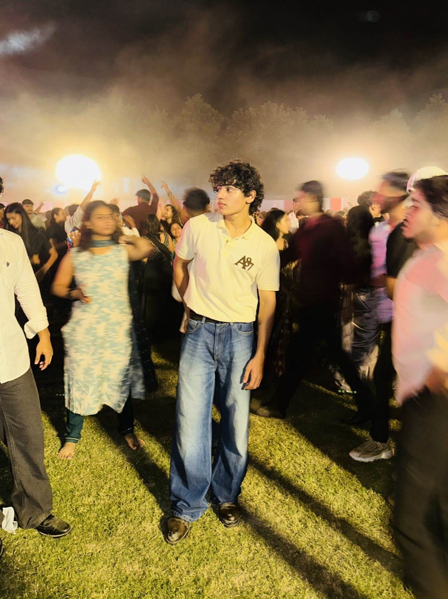

BCA AI/ML STUDENT / SECTION C
Mohammad
Haider.
AI/ML Developer · Builder
I build real-world systems, not just study them. Interested in AI, useful software, and how people interact with both.
OPEN TO INTERNSHIPS & PART-TIME ROLES

AI/ML Py Python ✳ React ⌘ LangChain ◌ Machine learningCurious about the
things we can build.
I'm studying BCA AI/ML and learning by making things. I like exploring how AI can solve practical problems, then building small projects to test those ideas.
Projects & experiments
Rural Voice
Companion
Voice-first AI prototype with automatic language detection and eight specialized agents for everyday questions.
VIEW REPOSITORY↗ 02 / REPOSITORY▥LLM · RAGPDF Chatbot
Document question-answering app using a retrieval pipeline, LangChain, ChromaDB, Gemini, and Streamlit.
VIEW REPOSITORY↗ 03 / REPOSITORY⌘AUTOMATION · VIDEOAI Versus
Automated video publishing workflow connecting n8n, Google Sheets, HeyGen, Creatomate, and Blotato.
VIEW REPOSITORY↗ 04 / REPOSITORY✳DATA · NLPSentiment & Topic
Analysis
Streamlit dashboard for review sentiment and topic analysis, built with Python and scikit-learn.
VIEW REPOSITORY↗Day 1 coursework
CSS Basics
& Box Model